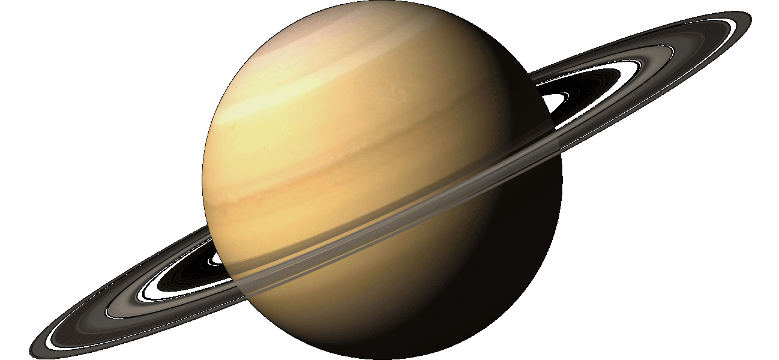

Saturn is the sixth planet from the Sun and the second-largest in the Solar System, after Jupiter. It is a gas giant with an average radius about nine times that of Earth. It has only one-eighth the average density of Earth, but with its larger volume Saturn is over 95 times more massive. Saturn is named after the Roman god of agriculture; its astronomical symbol (♄) represents the god's sickle. Saturn's interior is probably composed of a core of iron–nickel and rock (silicon and oxygen compounds). This core is surrounded by a deep layer of metallic hydrogen, an intermediate layer of liquid hydrogen and liquid helium, and finally outside the Frenkel line a gaseous outer layer.

Physical characteristics
Saturn is a gas giant because it is predominantly composed of hydrogen and helium. It lacks a definite surface, though it may have a solid core. Saturn's rotation causes it to have the shape of an oblate spheroid; that is, it is flattened at the poles and bulges at its equator. Its equatorial and polar radii differ by almost 10%: 60,268 km versus 54,364 km. Jupiter, Uranus, and Neptune, the other giant planets in the Solar System, are also oblate but to a lesser extent. Saturn is the only planet of the Solar System that is less dense than water—about 30% less. Although Saturn's core is considerably denser than water, the average specific density of the planet is 0.69 g/cm3 due to the atmosphere. Jupiter has 318 times the Earth's mass, and Saturn is 95 times the mass of the Earth. Together, Jupiter and Saturn hold 92% of the total planetary mass in the Solar System. On 8 January 2015, NASA reported that a team of scientists from the Jet Propulsion Laboratory determined the barycenter of the planet Saturn and its family of moons to within 4 km (2.5 mi) using data from an experiment conducted with the Cassini spacecraft and the Very Large Baseline Array.
Internal structure
Despite consisting mostly of hydrogen and helium, most of Saturn's mass is not in the gas phase, because hydrogen becomes a non-ideal liquid when the density is above 0.01 g/cm3, which is reached at a radius containing 99.9% of Saturn's mass. The temperature, pressure, and density inside Saturn all rise steadily toward the core, which causes hydrogen to be a metal in the deeper layers. Standard planetary models suggest that the interior of Saturn is similar to that of Jupiter, having a small rocky core surrounded by hydrogen and helium with trace amounts of various volatiles. This core is similar in composition to the Earth, but more dense. Examination of Saturn's gravitational moment, in combination with physical models of the interior, has allowed constraints to be placed on the mass of Saturn's core. In 2004, scientists estimated that the core must be 9–22 times the mass of the Earth, which corresponds to a diameter of about 25,000 km. This is surrounded by a thicker liquid metallic hydrogen layer, followed by a liquid layer of helium-saturated molecular hydrogen that gradually transitions to a gas with increasing altitude. The outermost layer spans 1,000 km and consists of gas. Saturn has a hot interior, reaching 11,700 °C at its core, and it radiates 2.5 times more energy into space than it receives from the Sun. Jupiter's thermal energy is generated by the Kelvin–Helmholtz mechanism of slow gravitational compression, but such a process alone may not be sufficient to explain heat production for Saturn, because it is less massive. An alternative or additional mechanism may be generation of heat through the "raining out" of droplets of helium deep in Saturn's interior. As the droplets descend through the lower-density hydrogen, the process releases heat by friction and leaves Saturn's outer layers depleted of helium. These descending droplets may have accumulated into a helium shell surrounding the core. Rainfalls of diamonds have been suggested to occur on Saturn, as well as on Jupiter and ice giants Uranus and Neptune.